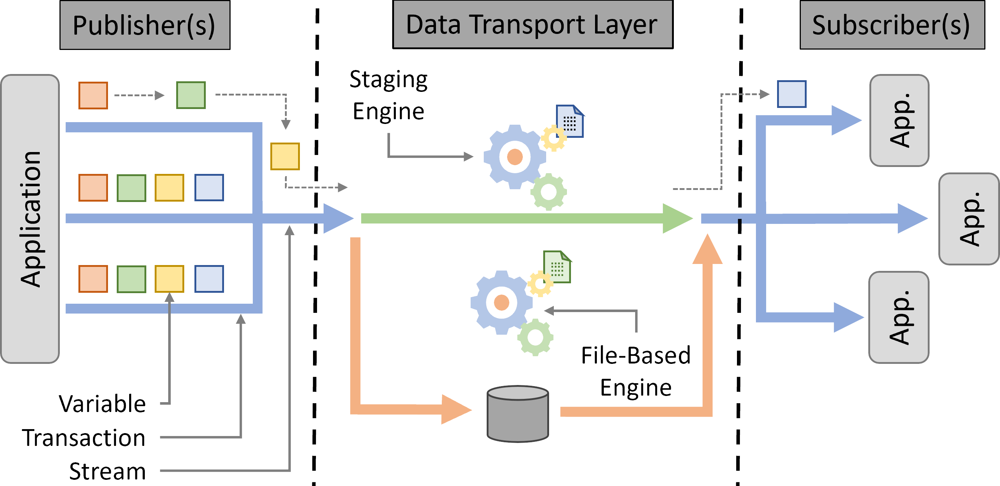
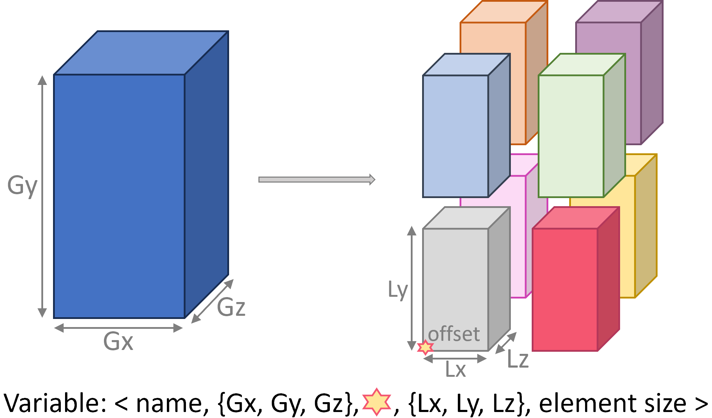
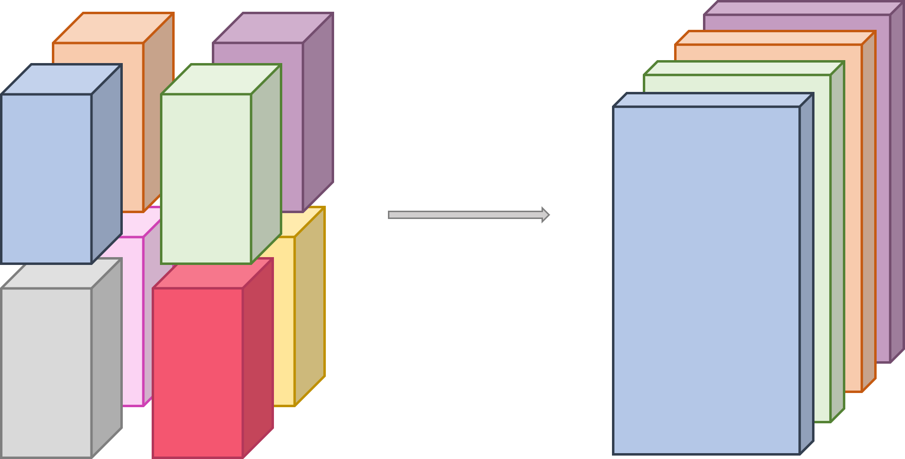

The DTLMod programming interface
{kind=link}
Main Concepts
DTL
A DTL is created by calling DTL::create() at the beginning of the
main() function of your simulator. This function can take as an optional argument a JSON configuration
file that describes the different Streams to be created during the simulation each with a name,
Engine type, and Transport method.
A common in situ processing scenario is that some analyses or visualization are only needed when certain conditions are met. In such cases, a new process is spawned, subscribes to some variables, and analyzes or visualizes data. DTLMod has been designed to enable the development of simulators in which actors can connect to or disconnect from the DTL at any time. A DTL thus remains active from its creation until the end of the simulation when it is automatically destroyed.
Internally, a DTL is implemented as a server daemon process that answers connection and disconnection requests from the simulated actors and maintains the set of active connections.
Stream
The Stream abstraction represents a connection between a simulated actor and the DTL, through which data transport operations occur, and acts as a Variable factory. The publishers define the variables a Stream has to transport. Each publisher provides global and local information about the variable (see Variable abstraction) On the subscribers side, actors first have to inquire about a variable (i.e., to know its shape and size) before being able to retrieve it from the DTL. Actors can also obtain a list of the names of the variables associated to a stream. Finally, opening a Stream creates a specific Engine to actually handle data transport.
Engine
The Engine abstraction is the base interface through which the DTL interacts with the simulated communication or I/O subsystems in charge of the simulation of data movement or storage. DTLMod exposes two types of engines: file-based engines, that write and read data to and from storage and staging engines that stream data from the memory of publishers to that of subscribers.
An Engine are attached to a Stream. A simulated actor can thus adapt the type of Engine to the purpose of each individual Stream. For instance, one will create a stream with a file-based engine to store application checkpoints and another stream with a staging engine to transfer data from one analysis component to another. The type of Engine to use can be specified either at the creation of a Stream or in an external configuration file passed as argument when creating the DTL.
Transport method
An engine is then associated to a specific Transport method that further specifies how data is written to and read from a file system or streamed from one workflow component to another. This separation between Engine and Transport method allows you to switch between multiple implementations of the same service without having to modify the code of your in situ workflow simulator: Changing of transport method simply amounts to modifying a configuration parameter of the Stream.
For file-based engines, the default transport method consists in having each publisher simulate the writing, for each Transaction, of its own share of a Variable in a distinct simulated file located on a specified simulated storage space.
When a subscriber requests a (selection of a) Variable with a different access pattern, DTLMod first computes which files contain the different pieces of the requested variable and then simulates the corresponding read operations of these files, wherever they are virtually stored. The simulation of these I/O operations is delegated to the file system module of SimGrid that exposes high-level abstractions for the simulation of file-system operations on local and remote storage.
To create a file-based Engine, you must specify where to store the simulated files. This is done by
passing as argument to the Stream::open() method a string which contains the
location and name of the targeted file system and a path to a specific directory. This information can also be stored
in a separate configuration file, which means that you can test different scenarios (e.g., using a local or remote file
system) without having to modify the code of their simulator.
The location of the file system has a direct impact on the simulation of I/Os by SimGrid’s file system module. If the DTL accesses a remote file system, a write (resp. read) operation implies the simulation of a network communication before (resp. after) the simulation of the corresponding I/O operation on a storage device.
More details on what happens under the hood when using a File Engine are given in the Inside the File engine section of the documentation.
DTLMod exposes two Transport methods for staging engines. The first method simulates both memory copy and network transfer while ensuring the respect of flow dependencies. Whether a data copy or transfer is simulated depends on the respective mapping of the publisher and subscriber on computing resources. If both run on the same node, they virtually share a memory space, and DTLMod simulates a deep memory copy—as an intra-node communication whose performance can be configured in the description of the simulated platform. Otherwise, it simulates a network communication.
To implement this, DTLMod leverages SimGrid’s mailbox abstraction which acts as a rendez-vous point between actors. Only when two actors meet on such a rendez-vous point, the simulation of a memory copy or data transfer starts.
The second transport method provides you with a “what if an ideal transport existed?” baseline for your performance evaluation studies, e.g., all the data exchanges made through the DTL take zero time. This method leverages another abstraction exposed by SimGrid to simulate inter-process communications: Message queues have the same semantic and purpose as mailboxes, ensuring the respect of control and flow dependencies, but do not induce any simulated time.
Whether to internally rely on mailboxes or message queues to stream data between publishers and subscribers is done by
selecting the Transport method method of the Stream to either Transport::Method::Mailbox or
Transport::Method::MQ. More details on the internals of Staging engines can be found in the
Inside the Staging engine section of the documentation.
Variable
At the core of the DTLMod is the data transported from publishers to subscribers. Many in situ processing workflows involve parallel MPI codes as data producers. These codes manipulate multidimensional arrays distributed over multiple ranks. DTLMod adopts this data structure as the basis of its Variable abstraction.
The figure below illustrates shows how to define a 3-dimensional array, distributed to eight MPI ranks organized in a \(2 \times 2 \times 2\) grid, as a self-descriptive tuple.
{kind=link}
This tuple stores the name of the variable (that is unique to a given Stream), the global dimensions of the multidimensional array (\(G_x\), \(G_y\), and \(G_z\)) and, for each rank, the local part (\(L_x\), \(L_y\), and \(L_z\)) owned by that rank after decomposition and distribution, and a 3D-offset (represented by a star in the figure) that indicates where the local array is positioned in the global array. Finally, the tuple stores the size of the elements in the array.
Transaction
Simulated actors can publish, or subscribe to, one or more Variable variables within a Transaction. This logical construct delimits the interactions between an actor and the DTL and enables the synchronization between publishers and subscribers.
When a simulated actor starts a new Transaction on a Stream, DTLMod makes it wait for the completion of any in-flight data transport activity from the previous transaction on that stream.
Actors that subscribe to a Variable can also, before beginning a new transaction, select a specific subset of the multidimensional array this Variable represents (e.g., to focus on a smaller region of interest or adapt the decomposition and distribution of the variable to subsequent data processing). The figure below illustrates such a selection, made on the subscriber side. Four actors subscribe to the 3D variable defined the previous section and select blocks of 2D slices, along the Z-dimension.
{kind=link}
During its execution, a simulated actor can perform several transactions to model the periodic production of data, its transport, and analysis to monitor the progress of an iterative computation. For any Variable, DTLMod keeps as metadata which actor(s) published it and in which transaction(s). This allows subscriber(s) to select specific transaction(s) when retrieving data from the DTL.
API Reference
class DTL
A class that implements a Data Transport Layer abstraction.
Creation
#include <dtlmod/DTL.hpp>
Warning
doxygenfunction: Unable to resolve function “dtlmod::DTL::create” with arguments () in doxygen xml output for project “dtlmod” from directory: ../build/xml. Potential matches:
- void create(std::string_view filename = std::string_view{})
Warning
doxygenfunction: Unable to resolve function “dtlmod::DTL::create” with arguments (const std::string&) in doxygen xml output for project “dtlmod” from directory: ../build/xml. Potential matches:
- void create(std::string_view filename = std::string_view{})
import dtlmod
- static DTL.create(filename: str = '') None
Create the DTL (no return)
Connection and Deconnection
-
static std::shared_ptr<DTL> dtlmod::DTL::connect()
Connect an Actor to the Data Transport Layer.
- Returns:
A handler on the DTL object.
-
static void dtlmod::DTL::disconnect()
Disconnect an Actor from the Data Transport Layer.
-
inline bool dtlmod::DTL::has_active_connections() const noexcept
Helper function to check whether some simulated actors are currently connected to the DTL.
- Returns:
A boolean value.
Stream factory
Warning
doxygenfunction: Unable to resolve function “dtlmod::DTL::add_stream” with arguments (const std::string&) in doxygen xml output for project “dtlmod” from directory: ../build/xml. Potential matches:
- std::shared_ptr<Stream> add_stream(std::string_view name)
Warning
doxygenfunction: Unable to resolve function “dtlmod::DTL::get_stream_by_name” with arguments (const std::string&) const in doxygen xml output for project “dtlmod” from directory: ../build/xml. Potential matches:
- std::optional<std::shared_ptr<Stream>> get_stream_by_name(std::string_view name) const
-
inline const std::unordered_map<std::string, std::shared_ptr<Stream>> &dtlmod::DTL::get_all_streams() const noexcept
Retrieve all streams declared in the Data Transport Layer.
- Returns:
a map of handlers on Stream objects with their names as keys.
- DTL.add_stream(self: dtlmod.DTL, name: str) dtlmod::Stream
Add a data stream to the DTL
- DTL.stream_by_name(self: dtlmod.DTL, name: str) dtlmod::Stream
Retrieve a data stream from the DTL by its name (returns None if not found)
- property DTL.all_streams
Retrieve all streams declared in the DTL (read-only)
class Stream
Configuration
-
Stream &dtlmod::Stream::set_engine_type(const Engine::Type &engine_type)
Stream configuration function: set the Engine type to create.
- Parameters:
engine_type – The type of Engine to create when opening the Stream.
- Returns:
The calling Stream (enable method chaining).
-
Stream &dtlmod::Stream::set_transport_method(const Transport::Method &transport_method)
Stream configuration function: set the Transport Method to use.
- Parameters:
transport_method – the Transport methode to use when opening the Stream.
- Returns:
The calling Stream (enable method chaining).
-
Stream &dtlmod::Stream::set_metadata_export() noexcept
Stream configuration function: specify that metadata must be exported.
- Returns:
The calling Stream (enable method chaining).
-
Stream &dtlmod::Stream::unset_metadata_export() noexcept
Stream configuration function: specify that metadata must not be exported.
- Returns:
The calling Stream (enable method chaining).
- Stream.set_engine_type(self: dtlmod.Stream, type: dtlmod::Engine::Type) dtlmod.Stream
Set the engine type associated to this Stream
- Stream.set_transport_method(self: dtlmod.Stream, method: dtlmod::Transport::Method) dtlmod.Stream
Set the transport method associated to this Stream
- Stream.set_metadata_export(self: dtlmod.Stream) dtlmod.Stream
Specify that metadata must be exported for that stream
- Stream.unset_metadata_export(self: dtlmod.Stream) dtlmod.Stream
Specify that metadata must not be exported for that stream
Properties
-
const char *dtlmod::Stream::get_engine_type_str() const noexcept
Helper function to print out the Engine::Type of the Stream.
- Returns:
The corresponding C-string
-
const char *dtlmod::Stream::get_transport_method_str() const noexcept
Helper function to print out the Transport::Method of the Stream.
- Returns:
The corresponding C-string
-
inline const char *dtlmod::Stream::get_access_mode_str() const noexcept
Helper function to print out the access Mode of the Stream.
- Returns:
The corresponding C-string
-
inline bool dtlmod::Stream::does_export_metadata() const noexcept
Helper function to know if the Stream does export metadata or not.
- Returns:
a boolean indicating if the Stream does export metadata or not
- property Stream.engine_type
Print out the engine type of this Stream (read-only)
- property Stream.transport_method
Print out the transport method of this Stream (read-only)
- property Stream.access_mode
Print out the access mode of this Stream (read-only)
- property Stream.metadata_export
Does the stream export metadata (read only)
Engine factory
Warning
doxygenfunction: Unable to resolve function “dtlmod::Stream::open” with arguments (const std::string&, Mode) in doxygen xml output for project “dtlmod” from directory: ../build/xml. Potential matches:
- std::shared_ptr<Engine> open(std::string_view name, Mode mode)
-
inline size_t dtlmod::Stream::get_num_publishers() const
Helper function to obtain the number of actors connected to Stream in Mode::Publish.
- Returns:
The number of publishers for that Stream.
-
inline size_t dtlmod::Stream::get_num_subscribers() const
Helper function to obtain the number of actors connected to Stream in Mode::Subscribe.
- Returns:
The number of subscribers for that Stream.
- Stream.open(self: dtlmod.Stream, name: str, mode: dtlmod::Stream::Mode) dtlmod::Engine
Open a Stream and create an Engine
- property Stream.num_publishers
The number of actors connected to this Stream in Mode::Publish (read-only)
- property Stream.num_subscribers
The number of actors connected to this Stream in Mode::Subscribe (read-only)
Variable factory
Warning
doxygenfunction: Unable to resolve function “dtlmod::Stream::define_variable” with arguments (const std::string&, size_t) in doxygen xml output for project “dtlmod” from directory: ../build/xml. Potential matches:
- std::shared_ptr<Variable> define_variable(std::string_view name, const std::vector<size_t> &shape, const std::vector<size_t> &start, const std::vector<size_t> &count, size_t element_size)
- std::shared_ptr<Variable> define_variable(std::string_view name, size_t element_size)
Warning
doxygenfunction: Unable to resolve function “dtlmod::Stream::define_variable” with arguments (const std::string&, const std::vector<size_t>&, const std::vector<size_t>&, const std::vector<size_t>&, size_t) in doxygen xml output for project “dtlmod” from directory: ../build/xml. Potential matches:
- std::shared_ptr<Variable> define_variable(std::string_view name, const std::vector<size_t> &shape, const std::vector<size_t> &start, const std::vector<size_t> &count, size_t element_size)
- std::shared_ptr<Variable> define_variable(std::string_view name, size_t element_size)
Warning
doxygenfunction: Unable to resolve function “dtlmod::Stream::inquire_variable” with arguments (const std::string&) const in doxygen xml output for project “dtlmod” from directory: ../build/xml. Potential matches:
- std::shared_ptr<Variable> inquire_variable(std::string_view name) const
Warning
doxygenfunction: Unable to resolve function “dtlmod::Stream::remove_variable” with arguments (const std::string&) in doxygen xml output for project “dtlmod” from directory: ../build/xml. Potential matches:
- void remove_variable(std::string_view name)
-
std::vector<std::string> dtlmod::Stream::get_all_variables() const
Retrieve the list of Variables defined on this stream.
- Returns:
the list of Variable names
- Stream.define_variable(*args, **kwargs)
Overloaded function.
define_variable(self: dtlmod.Stream, name: str, element_size: int) -> dtlmod::Variable
Define a scalar variable for this Stream
define_variable(self: dtlmod.Stream, name: str, shape: List[int], start: List[int], count: List[int], element_size: int) -> dtlmod::Variable
Define a variable for this Stream
- Stream.inquire_variable(self: dtlmod.Stream, name: str) dtlmod::Variable
Retrieve a Variable information by name
- Stream.remove_variable(self: dtlmod.Stream, name: str) None
Remove a Variable from this Stream
- property Stream.all_variables
Retrieve the list of Variables by names
class Engine
Properties
-
inline const std::string &dtlmod::Engine::get_name() const noexcept
Helper function to print out the name of the Engine.
- Returns:
the corresponding string
-
inline const char *dtlmod::Engine::get_cname() const noexcept
Helper function to print out the name of the Engine.
- Returns:
the corresponding C-string
-
inline unsigned int dtlmod::Engine::get_current_transaction() const noexcept
Get the id of the current transaction (on the Publish side).
- Returns:
The id of the ongoing transaction.
Warning
doxygenfunction: Cannot find function “dtlmod::Engine::get_metadata_file_name” in doxygen xml output for project “dtlmod” from directory: ../build/xml
Transactions
-
void dtlmod::Engine::begin_transaction()
Start a transaction on an Engine.
All put and get operations must take place within a transaction (in a sense close to that used for databases). When multiple actors have opened the same Stream and thus subscribed to the same Engine, only one of them has to do the following when a transaction begins, this function is a no-op for the other subscribers:
if no transaction is currently in progress, start one, exit otherwise
if this is the first transaction for that Engine, create a synchronization barrier among all the subscribers.
Otherwise, wait for the completion of the simulated activities started by the previous transaction.
Warning
doxygenfunction: Unable to resolve function “dtlmod::Engine::put” with arguments (std::shared_ptr<Variable>) const in doxygen xml output for project “dtlmod” from directory: ../build/xml. Potential matches:
- void put(const std::shared_ptr<Variable> &var) const
- void put(const std::shared_ptr<Variable> &var, size_t simulated_size_in_bytes) const
Warning
doxygenfunction: Unable to resolve function “dtlmod::Engine::put” with arguments (std::shared_ptr<Variable>, size_t) const in doxygen xml output for project “dtlmod” from directory: ../build/xml. Potential matches:
- void put(const std::shared_ptr<Variable> &var) const
- void put(const std::shared_ptr<Variable> &var, size_t simulated_size_in_bytes) const
Warning
doxygenfunction: Unable to resolve function “dtlmod::Engine::get” with arguments (std::shared_ptr<Variable>) const in doxygen xml output for project “dtlmod” from directory: ../build/xml. Potential matches:
- void get(const std::shared_ptr<Variable> &var) const
-
void dtlmod::Engine::end_transaction()
End a transaction on an Engine.
This function first synchronizes all the subscribers thanks to the internal barrier. When the last subscriber enters the barrier, all the simulated activities registered for the current transaction are started.
Then it marks the transaction as done.
- Engine.begin_transaction(self: dtlmod.Engine) None
Begin a transaction on this Engine
- Engine.put(*args, **kwargs)
Overloaded function.
put(self: dtlmod.Engine, var: dtlmod.Variable) -> None
Put a Variable in the DTL using this Engine
put(self: dtlmod.Engine, var: dtlmod.Variable, simulated_size_in_bytes: int) -> None
Put a Variable in the DTL using this Engine
- Engine.get(self: dtlmod.Engine, var: dtlmod.Variable) None
Get a Variable from the DTL using this Engine
- Engine.end_transaction(self: dtlmod.Engine) None
End a transaction on this Engine
class Variable
Properties
-
inline const std::string &dtlmod::Variable::get_name() const noexcept
Helper function to print out the name of the Variable.
- Returns:
The corresponding string.
-
inline const char *dtlmod::Variable::get_cname() const noexcept
Helper function to print out the name of the Variable.
- Returns:
The corresponding C-string.
-
inline const std::vector<size_t> &dtlmod::Variable::get_shape() const noexcept
Get the shape of the Variable.
- Returns:
A vector of the respective size in each dimension of the Variable.
-
inline size_t dtlmod::Variable::get_element_size() const noexcept
Get the size of the elements stored in the Variable.
- Returns:
The elements’ size.
-
size_t dtlmod::Variable::get_global_size() const
Get the global size of the Variable.
The global size of a Variable corresponds to the product of the number of elements in each dimension of the shape vector by the element size.
- Returns:
The computed size.
-
size_t dtlmod::Variable::get_local_size() const
Get the local size object.
The local size of a Variable corresponds to the product of the number of elements in each dimension of the count vector by the element size. If variable was published to the DTL over multiple transactions, multiply the size by the number of transactions.
- Returns:
The computed size.
- property Variable.name
The name of the Variable (read-only)
- property Variable.shape
The shape of the Variable (read-only)
- property Variable.element_size
The element size of the Variable (read-only)
- property Variable.global_size
The global size of the Variable (read-only)
- property Variable.local_size
The local size of the Variable for the current actor (read-only)
Selection
-
void dtlmod::Variable::set_selection(const std::vector<size_t> &start, const std::vector<size_t> &count)
Allow a subscriber to select what subset of a variable it would like to get.
- Parameters:
start – a vector of starting positions in each dimension of the Variable.
count – a vector of number of elements to get in each dimension.
-
inline void dtlmod::Variable::set_transaction_selection(unsigned int transaction_id)
Allow a subscriber to select what transaction it would like to get.
- Parameters:
transaction_id – the id of the transaction to get.
-
void dtlmod::Variable::set_transaction_selection(unsigned int begin, unsigned int count)
Allow a subscriber to select what transactions it would like to get.
- Parameters:
begin – the id at which the range of transactions to get begins.
count – the number of transactions in the range.
- Variable.set_selection(self: dtlmod.Variable, start: List[int], count: List[int]) None
Set the selection of elements to consider for this Variable
- Variable.set_transaction_selection(*args, **kwargs)
Overloaded function.
set_transaction_selection(self: dtlmod.Variable, transaction_id: int) -> None
Set the selection of transactions to consider for this Variable
set_transaction_selection(self: dtlmod.Variable, begin: int, count: int) -> None
Set the selection of transactions to consider for this Variable